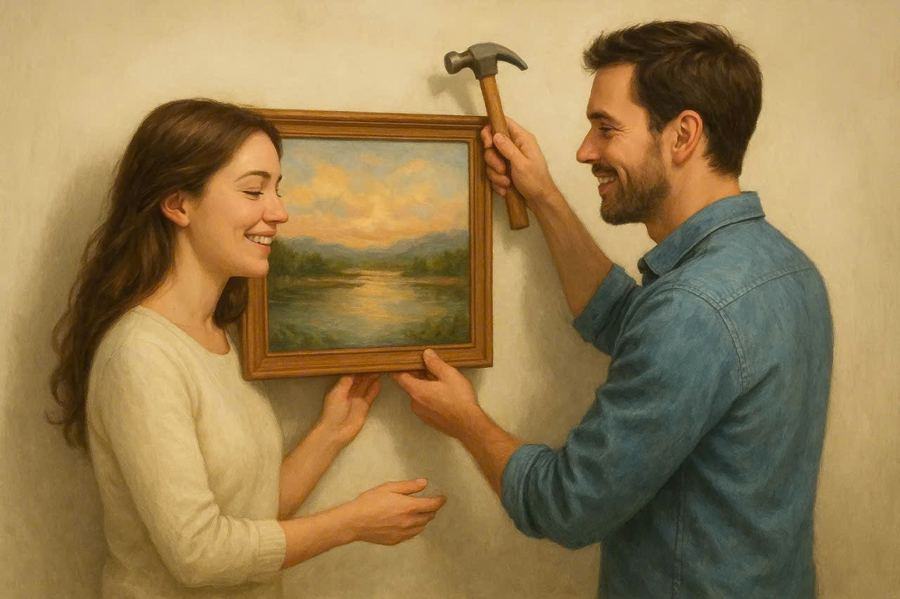
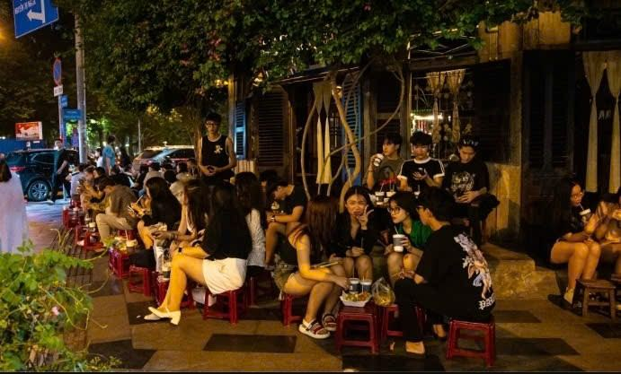
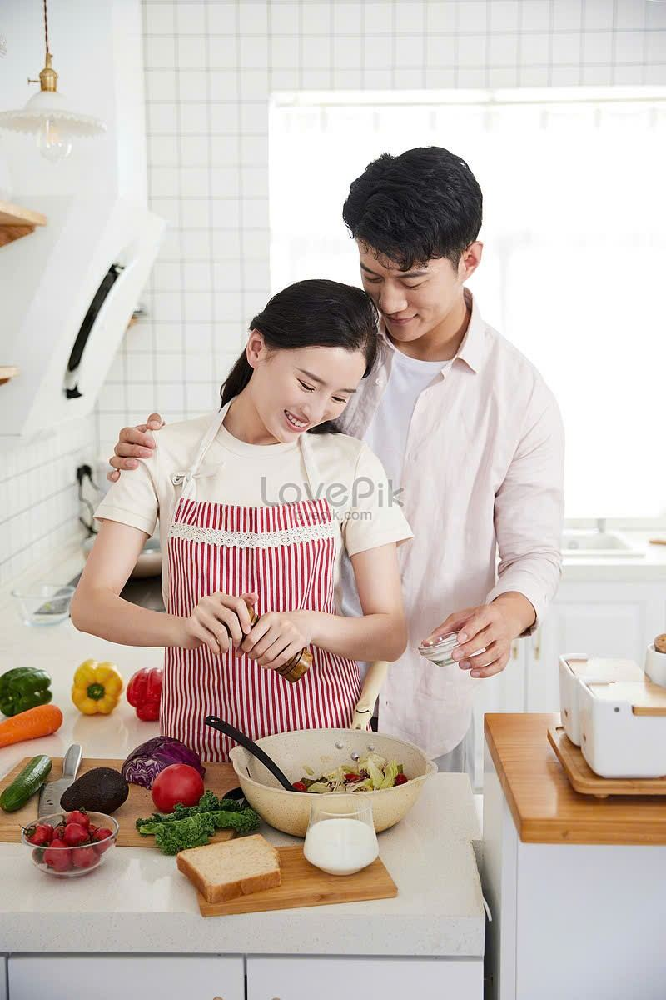

Aptis Speaking updated 12.10
Part 1: 30s/each q
Part 1: In this part I’m going to ask you three short questions about yourself and your interests. You will have 30 seconds to reply to each question. Begin speaking when you hear this sound
I am going to tell you about my favourite food. It is Banh Chung. It is made from rice, meat, green bean and spices. It is really delicious, healthy and cheap. It is special. It is the traditional kind of food in Vietnam. It is made on Tet holiday. I really like the taste of Banh Chung and I can eat it every day. I usually eat it with pickled vegetables, which makes the taste even better. My family always makes a big batch together during Tet.
I came here by car today. My house is very far from here, about 100 km. It took me two hours to come here. The traffic in Hanoi was very heavy today. The streets were crwoded with people, cars and motorbikes. I felt a bit tired after the long drive, but I was glad to arrive on time. Next time, I might try leaving earlier to avoid the traffic.
Tell me about your hobbies = What do you like doing in your free time?
In my free time, I play sports. I often play tennis with my friends after work or at the weekend. It is fun and useful. It helps me relax after work and improve my health. Also, it allows me to keep fit and prevent health problems. We often play tennis at a court near my house. It is really relaxing. Sometimes we even join a small tournament with other friends. Playing tennis regularly has made me feel more energetic.
Part 2: 45s/each q
 |
|
|---|---|
Last week I changed something in my house. I bought a new table and I had to rearrange the furniture in my room. I cleaned the room and then hang some pictures on the wall. I bought flowers and put them on the table to make the room more beautiful and cozy. It took me almost the whole afternoon, but I was happy with the result. My family said the room looked much nicer than before.
There are some reasons why people like to change the look . First, to make the room more beautiful. Second, to improve the comfort and convenience.
Last, it is a way to express a person’s style and creativity. For example, I sometimes rearrange my furniture just to feel a change. It can make daily life less boring.
Part 3: 45s/each


The two pictures show people in different places.
+ Picture 1 shows many people eating on a sidewalk of a street but picture 2 shows a couple preparing the meal at home
+ picture 1 looks a bit dark so I think the time is evening while picture 2 looks bright so I think the time is day
+ People in both pictures are wearing casual clothes and they are enjoying their time
2. What are the benefits of type of food?
- fast food and home-made dishes have different attractions and are suitable for different people
- Fast food is fast and convenient so can save a lot of time
- home-made dishes are cheap and healthy. We can save money and improve our health. For example, I sometimes order fast food when I am busy at work. However, I try to cook at home on weekends to eat more healthily.
3. People say that eating together is better than eating alone what do you think?
I don’t think that eating together is better than eating alone. There are some reasons for this. First, eating alone is faster and so people can save time. Second, they can eat what they like. Last, it is good for health because they can focus on eating. For example, when I eat alone, I can choose exactly what I want without discussing with anyone. However, I still enjoy eating with family sometimes because it feels warmer.
Topic 10: Lần giúp đỡ ai đó
Tell me a time you helped someone?
How did you feel?
Do people need to help other people?
People need help others for some reasons. The first reason is that if they don’t help, they will feel sorry someday. Another reason is that helping other people can bring us happiness. One more reason is that it is one way do develop the society. |
|---|